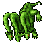

Hydra
Essa task você vai ter que matar 500 "Hydra".
A "Hydra" tem 2.500 de vida e tem defesa 🧊15 🌾90 🔥15 💀15 ⚡15 💡15 e XP de 2100.
O XP dessa quest varia entre 1.050.000 mais 200.000 da task, Lembrando que não estou contando com bonus de xp.
O melhor loot é o "Slug drud" um item de montaria, em média 1/500 de drop.
Para encontrar as criaturas você pode "/ir hydra1", "/ir hydra2" e "/ir hydra3".
Home